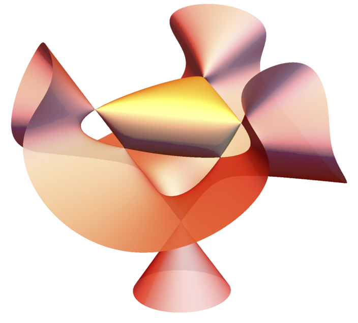

Convex Optimization, Domain-Driven Form
Convex optimization is an important special case of mathematical optimization applications in a wide range of disciplines.
Convex optimization's powerful and
elegant theory has been coupled with faster and more reliable numerical linear algebra software and
powerful computers to spread its applications over many fields such as (1) data science,(2) control theory and signal processing,
(3) relaxation and randomization for hard nonconvex problems, and (4) robust optimization.
We say a problem is in the Domain-Driven form if the underlying convex set is given as the domain of a convex function
which is a self-concordant (s.c.) barrier. We have designed and analyzed infeasible-start primal-dual interior-point algorithms for problems
given in the Domain-Driven form. Infeasible-start means our algorithms can return the status of the given problem with robust certificates of
approximate optimality, unboundedness, and infeasibility.
These algorithms are the foundation of a software packge Domain-Driven Solver (DDS).
Even though we have meticulously implemented the Hessian-vector product for every constraint type, there are still many possibilities to explore.
To improve the performance of DDS and invent
new optimization techniques, I am also working to leverage second-order information.
Domain-Driven Solver (DDS)
We have released DDS 2.0
on Nov 11th, 2020. DDS accepts many interesting classes of function/set constraints. You can solve several classes of convex optimization problems
using DDS 2.0, ranging from LP and SDP to
quantum entorpy and hyperbolic programming. DDS is also easily expandable, and by the discovery of a s.c. barrier,
a new set constraint can be added to DDS.
Optimization of quantum entropy and quantum relative entropy
 Quantum entropy and quantum relative entropy have applications in quantum information processing. DDS 2.0 accepts constraints involving quantum entropy and quantum relative entropy
and significantly outperforms methods that approximate these functions by SDP constraints. Despite acceptable performance, there is still room in DDS for performance improvement.
The barrier function we use in DDS for quantum relative entropy is not a proven s.c. barrier. We are currently working to prove a conjectured s.c. barrier
for the epigraph of quantum relative entropy function. In the application part, there are many open questions mostly related to efficiently evaluating the derivatives of the barrier (matrix)
functions used for quantum entropy and relative entropy.
Quantum entropy and quantum relative entropy have applications in quantum information processing. DDS 2.0 accepts constraints involving quantum entropy and quantum relative entropy
and significantly outperforms methods that approximate these functions by SDP constraints. Despite acceptable performance, there is still room in DDS for performance improvement.
The barrier function we use in DDS for quantum relative entropy is not a proven s.c. barrier. We are currently working to prove a conjectured s.c. barrier
for the epigraph of quantum relative entropy function. In the application part, there are many open questions mostly related to efficiently evaluating the derivatives of the barrier (matrix)
functions used for quantum entropy and relative entropy.
Hyperbolic programming

Hyperbolic programming has recently attracted attention for its connection to the sum-of-squares methods and generalized Lax conjecture.
Accepting hyperbolic constraints is a major contribution in DDS. DDS accepts polynomials in three different formats:
list of monomials, straight-line program, and determinantal representation. To scale DDS with the size of the input hyperbolic
polynomials in each format, some interesting open questions have to be answered. For example, for the straight-line program,
we are working to implement an automatic differentiation scheme for evaluating the derivatives of the polynomials. Automatic
differentiation has been studied extensively for its applications in machine learning.
Sum-of-Squares and SDP Complexity
In a very interesting theoretical project, we are using the theory of sum-of-squares of polynomials to attack the Turing machine complexity
of semidefinite programs (SDP). Even though an approximate solution for an SDP can be found in polynomial time and having an SDP formulation
is desirable in many applications, very little is known about the complexity of SDP in the Turing machine model. Even the question of whether
SDP feasibility is in the NP class or not is open. In the first part of this project, we have been studying the complexity of SDP problems
arise form the univariate nonnegative polynomials and trying to deepen our understanding of their structure.
Nonnegative polynomials and SOS problems have been studied for more than a century; however, numerous new applications
in optimization and machine learning have made them very popular among optimizers. The SOS method has been used to
improve guarantees for many approximations algorithms and become a new tool in computational complexity. To mention
new applications in machine learning, this method has given new bounds for sparse vector recovery and dictionary learning.